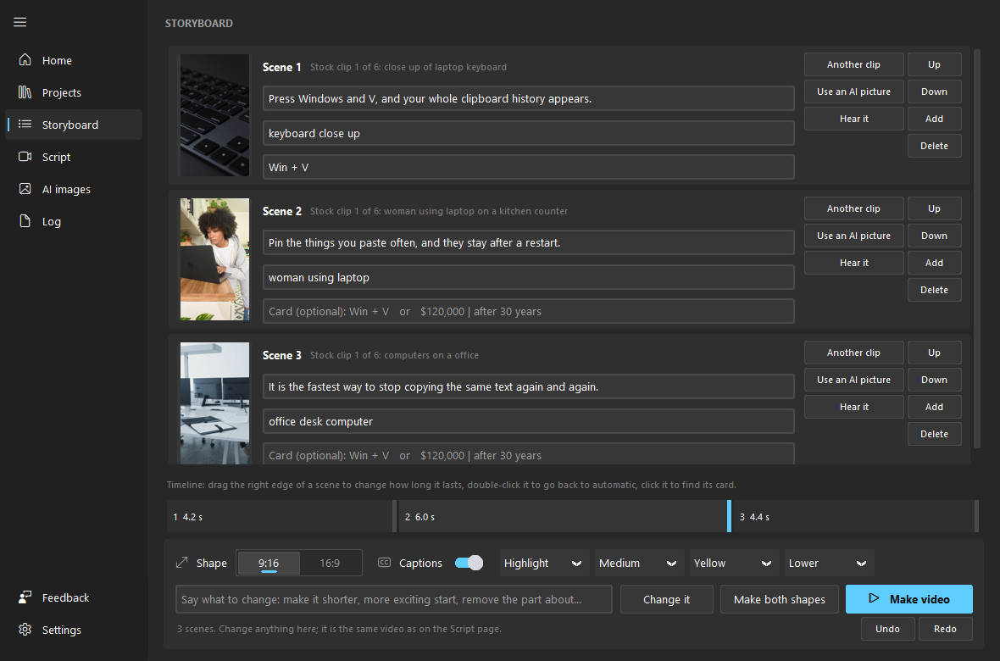
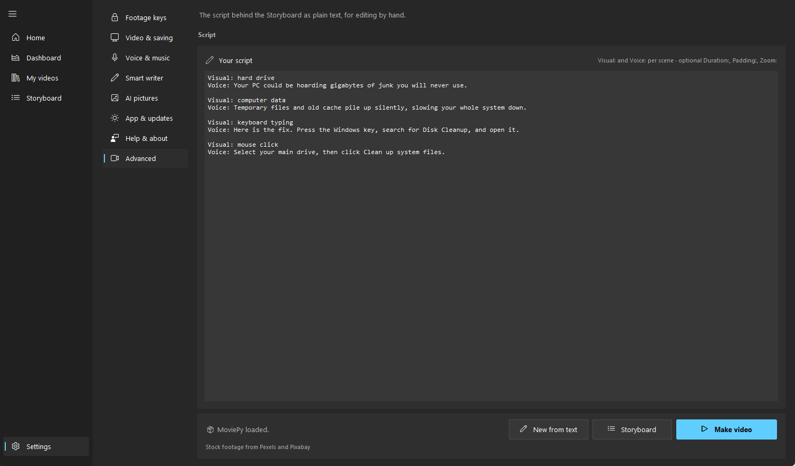
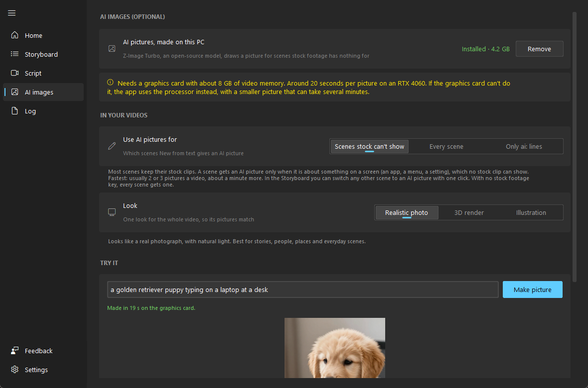
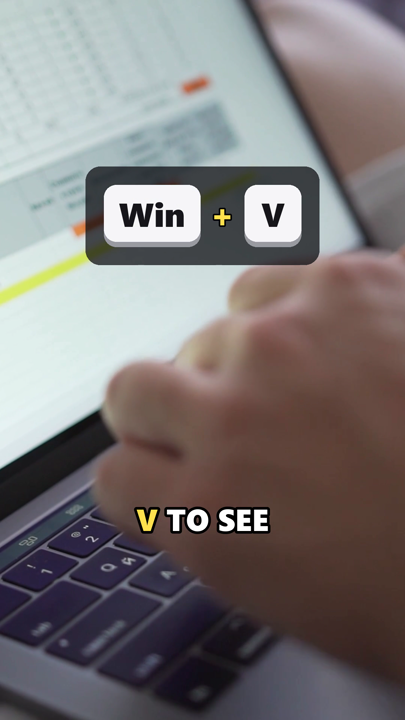

Paste text. Get a finished video.
Visual: fresh coffee beans
Voice: Here's the one coffee trick most people never try.
Visual: dark chocolate bar
Voice: Add a little chocolate before you brew.
The installer (89 MB) is a Windows program. If Windows says it's from an unknown publisher, choose More info, then Run anyway.
Every part of the video is done for you
You write what should be said and what should be seen. The app finds the footage, reads it out, adds captions and music, and saves an MP4 for Shorts, TikTok or YouTube.
See it before it's made
The Storyboard shows a card for each scene. Change a line, swap a clip, reorder scenes or hear a line read out, then make the video.

Turn any text into a script
Paste an article, a tip or your notes, say who it's for and how long it should be. A writer that runs on your PC turns it into scenes.

Pictures for what stock footage can't show
With a graphics card, the app draws an AI picture for a scene no clip fits. It's made on your PC too.

Keys and numbers on screen
When a line says "press Windows and V", the keys appear over the footage. Big numbers and short lists get a card too.

A finished Short, made from a script
This one came from a six-scene script. The footage, the voice and the captions that light up each word as it's said were all made by the app.
It all stays on your computer
There's nothing to sign up for and no trial: open it and make a video. The voices, the writer and the AI pictures run on your PC, so your text isn't sent anywhere. It's open source and free to keep, with 20 voices and 8 music tracks included.
Make your first video in a few minutes
For Windows 10 and 11. A free Pexels or Pixabay key adds stock footage; the first run shows you how to get one.
Windows warns you the first time
The app isn't signed with a paid certificate, so SmartScreen may say it's from an unknown publisher. Choose More info, then Run anyway. The code is public on GitHub if you'd like to check it first.